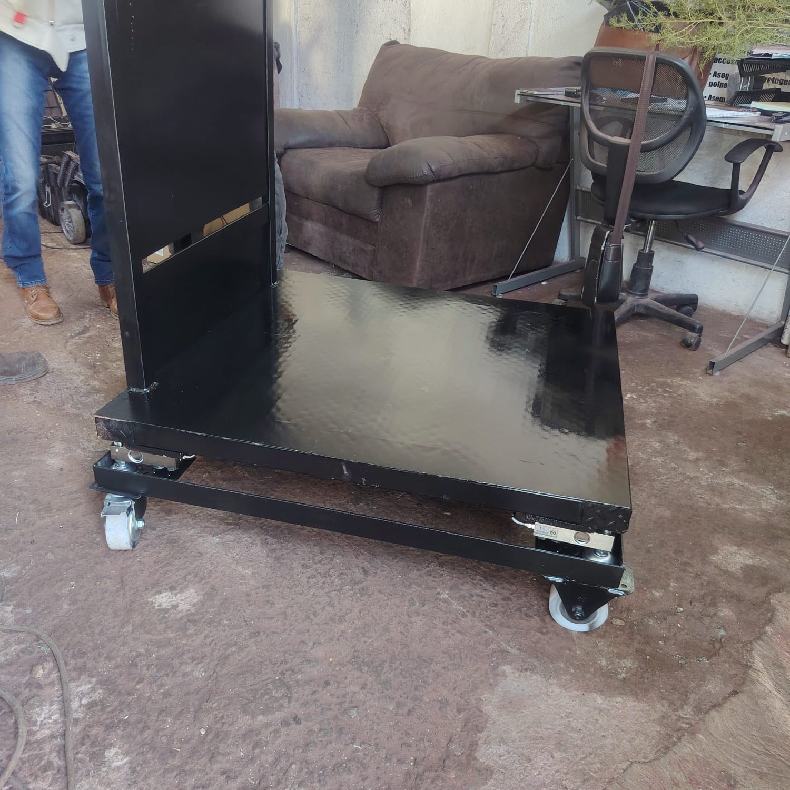
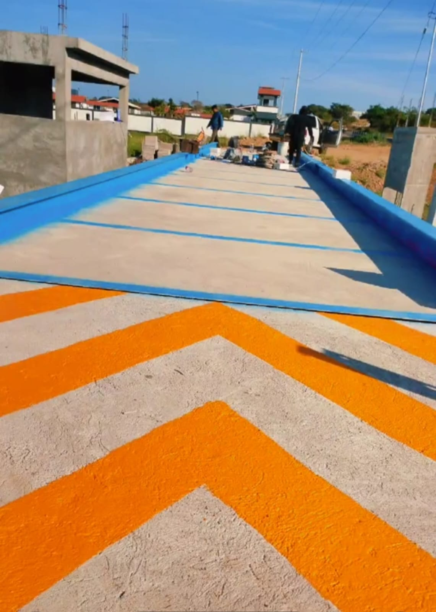
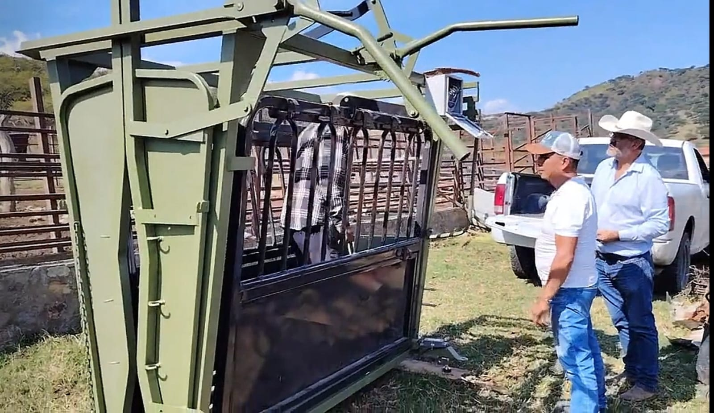
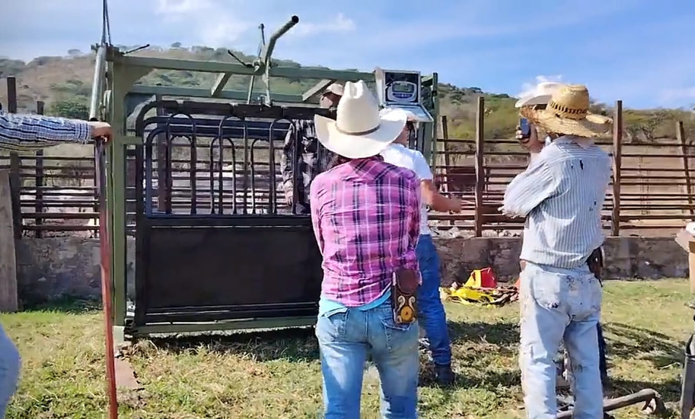

Compras, instalas y conservas con el mismo equipo.
Venta de básculas, instalación y mantenimiento en un solo lugar, para que no tengas que andar de proveedor en proveedor.
Taller en Puebla · Venta · Instalación · Mantenimiento
Vendemos, instalamos y damos mantenimiento a básculas de plataforma, tolvas, camioneras y ganaderas, con indicadores de peso y sensores de carga listos para trabajar.
Báscula de plataforma
kglectura de demostración
Por qué Reymo
Desde la báscula hasta el último sensor: te asesoramos, la instalamos y la mantenemos para que cada lectura sea de fiar.
Venta de básculas, instalación y mantenimiento en un solo lugar, para que no tengas que andar de proveedor en proveedor.
Plataforma, tolvas, camioneras, ganaderas y más: si sirve para pesar, lo resolvemos.
Instalamos la electrónica que convierte cada kilo en una lectura clara y estable.
Hablas con quien conoce las básculas por dentro: Roberto Cabrera Huerta, técnico especialista.
Atención de 8:30 a. m. a 6:00 p. m.
Cada giro pesa distinto. Nosotros adaptamos la solución a cómo trabajas.
Catálogo

01
Para tarimas, bultos y mercancía del día a día. Plataforma de acero con celdas de carga y su indicador de peso a la vista.
Quiero esta báscula02
Para pesar material a granel mientras fluye: granos, insumos y alimento. Sensores de carga en cada apoyo para saber lo que entra y lo que sale.
Quiero cotizar una tolva
03
Para pesar camiones completos de un solo paso: deck robusto, vigas laterales y acceso pensado para el tráfico pesado.
Quiero una camionera
04
Para pesar res, cerdo y más con control: mangas y jaulas con celdas de carga e indicador al alcance del operador.
Quiero una ganadera+
Si sirve para pesar, platiquemos. Revisamos tu caso y te proponemos la báscula, el indicador y los sensores adecuados.
Cuéntanos qué pesasAsí se construye una lectura exacta
Cada pesaje empieza sobre la plataforma: acero reforzado que recibe el peso y lo reparte hacia los apoyos.
Los sensores de carga, bajo la plataforma, convierten la fuerza en una señal eléctrica mínima. Aquí nace la precisión.
El indicador de peso interpreta la señal de todas las celdas y la suma en un solo número.
Un número limpio, grande y estable. Y con el mantenimiento correcto, tu báscula sigue leyendo así de bien.
Indicadores de peso y sensores de carga
Una buena báscula se decide en su electrónica. Instalamos indicadores de peso y sensores de carga que leen claro, estable y a la vista de quien opera.
Cada celda siente una parte del peso; el indicador las suma y muestra el total.
Del taller al campo
Sigue bajando

Pesar en campo abierto también tiene que ser exacto.
Quiero algo así en mi negocioTrabajos
Toca cualquier foto para verla en grande.
En video
Un recorrido por el trabajo de Reymo Básculas Scale. Dale play cuando quieras: el video solo se descarga si lo abres.
Estoy listo para mi básculaEncuentra tu báscula en 20 segundos
Dos preguntas y obtienes una recomendación clara para llegar a tu cotización con las ideas en orden.
Cómo trabajamos
Un proceso simple, sin vueltas, pensado para que tu operación no se detenga.
Quiero empezar hoyNos cuentas qué pesas, cuánto y dónde. Nada de formularios eternos.
Te proponemos la báscula, el indicador de peso y los sensores de carga adecuados para tu caso.
Montamos, conectamos y probamos para que arranques con el peso exacto desde el primer día.
Mantenimiento y servicio para que tu báscula siga pesando bien con el paso del tiempo.
Preguntas frecuentes
¿No ves tu duda? Escríbenos en el formulario o visítanos en el taller.
Básculas de plataforma, de tolva, camioneras y ganaderas, entre otras. Si algo sirve para pesar, lo platicamos y vemos cómo resolverlo.
No. Además de vender, damos servicio y mantenimiento a básculas de todo tipo, incluida la que ya tienes en operación.
Sí. Instalamos indicadores de peso y sensores (celdas) de carga, y también te ayudamos a elegir los adecuados para tu báscula.
Sí. Trabajamos con los sectores industrial, comercial, ganadero y agrícola, e instalamos básculas directamente en campo.
Usa el configurador o el formulario de contacto: cuéntanos qué necesitas pesar y qué servicio buscas, y armamos tu propuesta según tu caso.
Estamos en Calle Fray Bartolomé #8504, Colonia Cruces, Puebla. Atendemos de 8:30 a. m. a 6:00 p. m.
Tu siguiente pesaje empieza aquí
Cuéntanos qué necesitas pesar y qué servicio buscas. Te respondemos con una propuesta pensada para tu caso.
Estamos en Calle Fray Bartolomé #8504, Colonia Cruces, Puebla, de 8:30 a. m. a 6:00 p. m. Llega con lo que necesitas pesar y te orientamos en persona.
Quiero llegar al taller